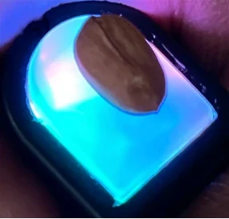
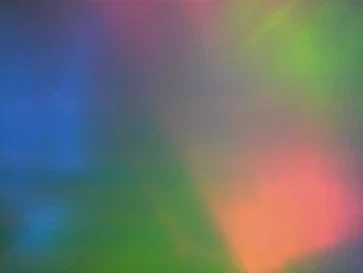
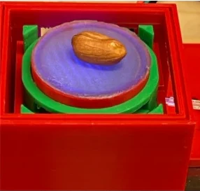
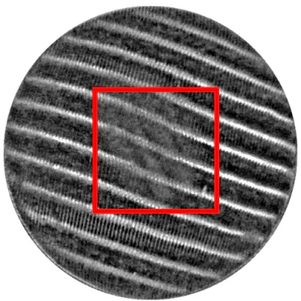
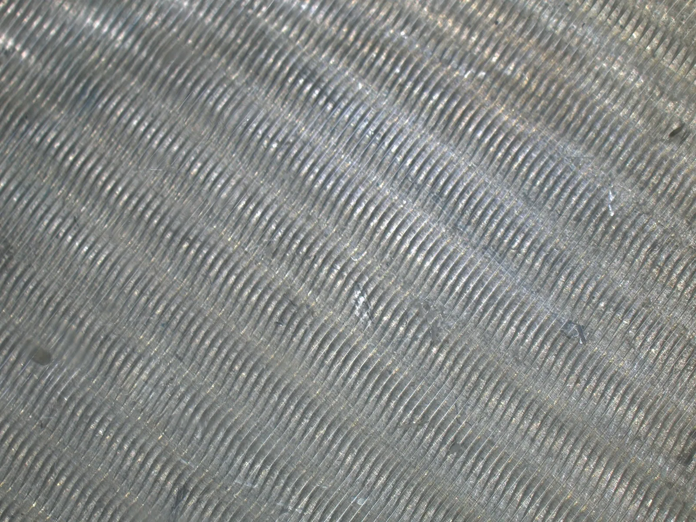
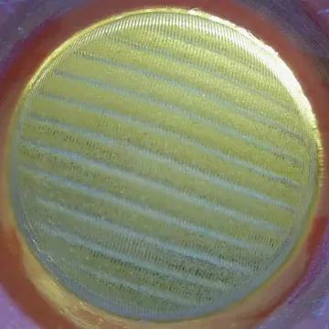
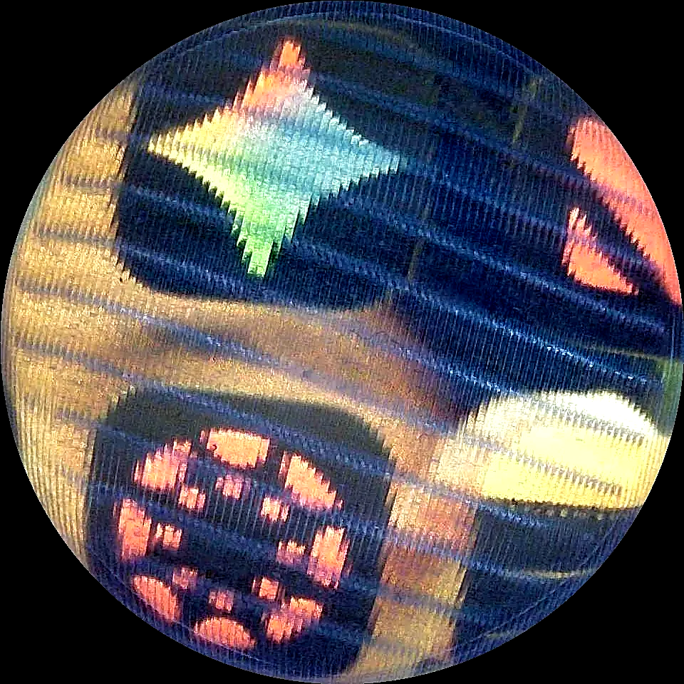
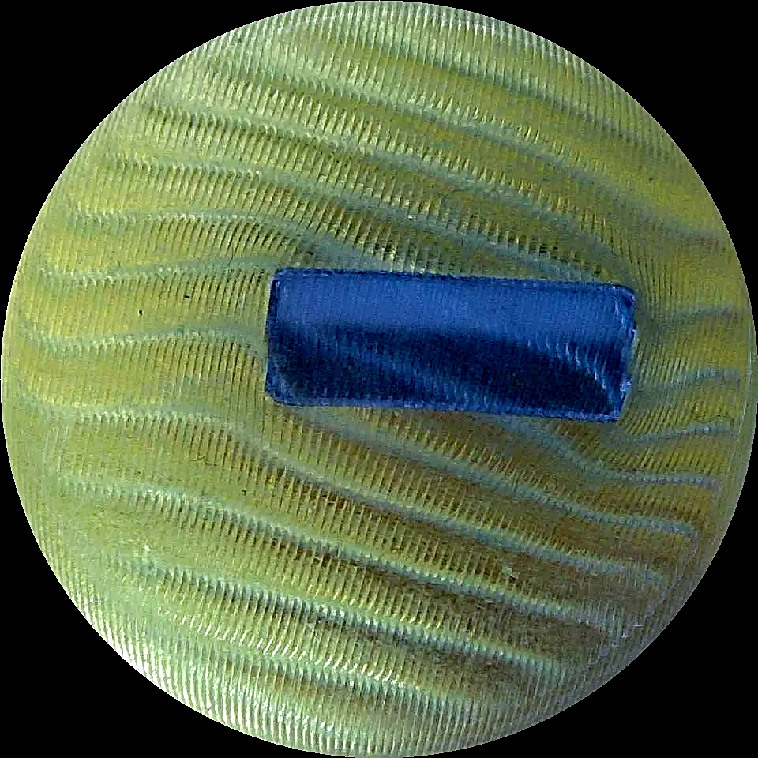
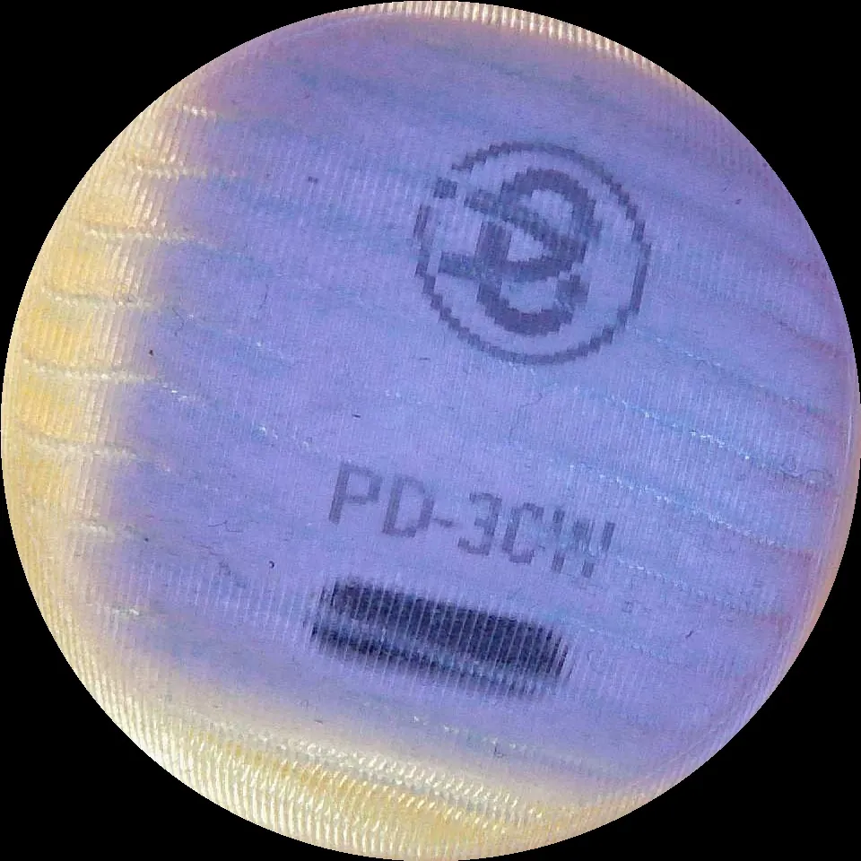
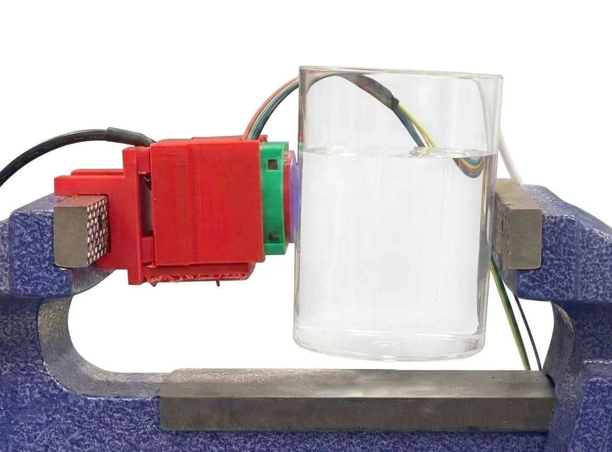

ACM MobiCom 2026 · Austin, TX
MoiréSkin
Ultra-Sensitive Sensor–Actuator
Visuo-Tactile Skin using Moiré Patterns
- Linzhen Zhu
- Liuxi Xing
- Runqiu Wang
- Ke Sun
Robot touch
A camera watches a soft gel.
- Visuo-tactile sensor on a gripper
- Press a screw on the gel
- Camera image under structured light
A 0.67-gram test
Can robot skin feel a peanut?


DIGITno visible change


MoiréSkinfringes bend
Visuo-tactile sensors today
Sensitive, or soft?
Our insight
Let moiré
amplify touch.
μmthe film barely bends
mmthe fringes move a lot
Hardware
One skin, two jobs.

Fine grating lines 5 mmOptical design
Clear skin, clear fringes.

Glowing grating
fluorescent under blue light



See through
clear cover · filters red light
No cleanroom
≈ $50 for the whole system
How it works
Two fine gratings.
330 μmtoo fine for the camera
Lower · fluorescent
Upper · clear
Overlap: fringes.
0.33 → 3 mmlines → fringes
Scroll ↕ to bring them together
Angle sets the gain.
Challenge · sensitivity vs resolution
Scroll ↕ to change the angle · hover to press
It feels its pressure.
- Chamber
- 0.0 hPa
- Fringe turn
- 0.0°
Scroll ↕ to pump air
Weather turns them.
Challenge · same turn, no touch
- Outside air
- 1013.2 hPa
- Fringe turn
- 0.0°
So does light.
+0.0°apparent turn · lamp outside the skin
Move the mouse · it steers the lamp
Zero-state calibration.
- Centre vs rim
- 0.00°
- Pump
- Zero ✓
Sensing
Two images → force + position.
Sensing
Millinewton precision.
Tiny force · 0–0.4 N · zero state
General · 0–4 N · random inflation
Sense + actuate
An active probe.
Sense + actuate
Weighing a filling cup.

Application
A toy arm, a precise touch.
Toy-grade, low-precision arm
- 1Grasp the cup
- 2Water pours in
- 3Feels the weight, inflates
- 4Holds steady, sets it down
Application
Built for data collection.
UMI-style handheld gripper
Senses tactile contactfrom fringe changes
Sees the berrythrough the skin
- Ultra-sensitive · 3.78 mN
- Soft & actuated · feels its own pressure
- Self-zeroing · by vision, < 2 s
- See-through · sees before touch
Sensing + actuation in one skin,
for dexterous manipulation.
Thank you.
Project page